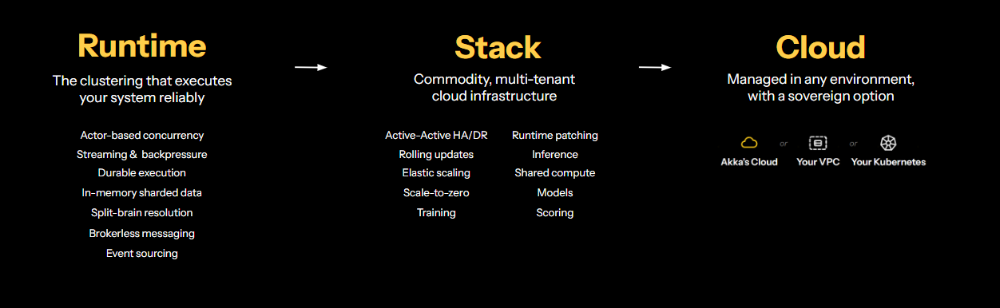

FDE deployments and fractured technology require months to reach production.
Frontier model costs are increasing unsustainably.
“You pay for intelligence twice: once with money, and again with the proprietary knowledge you must reveal.”Satya Nadella, Microsoft
How to continuously enforce policies across different agents and tools.
Akka runs your agentic system in our proprietary platform that guarantees resilience and scalability, including the agents, their memory, orchestration, guardrails, evaluations, training, and inference.Spec-driven delivery enables citizen, ML, and pro-code developers to create production-ready systems in days.Once there, the platform keeps identifying and training smaller models so your agents cost less to run.And, it enforces your guardrails and policies at runtime, even for agents not written in Akka.
Agentic systems are built and tested in local sandboxes. If it compiles, it’s production-ready. Your AI stateful memory is active-active replicated to other regions to provide 99.9999% AI uptime.

We ported our Python agents to Akka and got a 50% latency improvement and 300% concurrency improvement.
Jodie Wallis · CAIO, Manulife
Six specifications become one governed system. You describe what the system must do, and the platform generates the agents, workflows, APIs, memory, integrations, guardrails, evaluations, and tests that deliver it.
Because the specs are versioned and reviewed like code, agentic delivery moves inside the enterprise SDLC instead of around it. The same path modernizes systems you already run.
A working agent is not a production agent. Verify evaluates behaviour, enforces policy, and records what happened — inline, and never sampled.
Every run leaves a durable evidence record you can hand to an auditor, mapped against a corpus of 190 AI regulations. It governs agents built on Akka and agents built elsewhere.
Ten components cover what an agentic system actually needs: agents and workflows for behaviour, entities and views for durable state, and endpoints, timers, and consumers for everything that talks to the outside world.
State is durable by default and replayable from its event journal, so an agent that fails mid-task resumes rather than restarts.
An agent interacts with an AI model to perform a specific task. It keeps contextual history in session memory, which can be shared with other agents working toward the same goal.
It can expose function tools and call them when the model asks for them.
A model-driven component that runs as a durable process. It works on typed tasks, each with its own instructions and result schema, and the runtime drives the model through a decision loop until the task is done. Agent and task state persist as it goes, so work survives crashes and restarts.
Coordination is part of the component model: an agent can delegate to specialists, hand off to peers, or lead a team sharing a task list. The runtime exposes these as tools, so multi-agent systems are assembled from focused agents without writing orchestration code.
Workflows run long-running, multi-step business processes while you write only the domain logic. They provide durability and consistency, and can call other components and services.
A business transaction lives in one place, and the workflow either keeps it moving or rolls it back when a step fails.
Instead of storing the current state, these persist every event that led to it, written to a journal with ACID semantics.
State is rebuilt by replaying those events, which scales horizontally and isolates failures — and gives you a complete history of how the state came to be.
These persist state as a single current value, keyed by id.
Akka guarantees exactly one instance of each entity across the whole cluster, so commands are handled one at a time with no concurrency to reason about. Active state is held in memory and recovered from durable storage after a restart or rebalance.
Views let you read across many entities, or find an entity by something other than its id.
Each view is built for a specific access pattern and updates as the underlying entity state changes.
An endpoint is how a service is exposed to the outside world. HTTP endpoints accept and return JSON by default.
Lower-level APIs are available when you need full control over what data is accepted and returned.
gRPC endpoints expose a service through protobuf contracts defined in .proto files, so the service contract is explicit rather than implied.
Binary serialization and protobuf's forward and backward compatibility make service-to-service calls fast and safe to evolve without breaking existing clients.
MCP endpoints expose a service to MCP clients — LLM desktop applications, and agents running on other services.
What you expose becomes tools the model can call on its own behalf.
Timers schedule a call to run later — useful for checking whether something completed after the fact.
They are stored by the runtime and guaranteed to run at least once: if the call fails, the timer reschedules itself until it succeeds.
Consumers read a stream of events — from an entity's journal, from key value state changes, or from a message broker topic.
They also produce events outward, which is how an Akka service interacts with systems beyond it.
Frontier model spend rises with every call. Token Shredder uses evaluated production traffic to find the work a smaller model can do just as well, then trains, proves, and promotes it.
The measure is cost per verified task, not tokens saved — quality is held to the evidence Verify already collects, so cost falls without behaviour drifting.